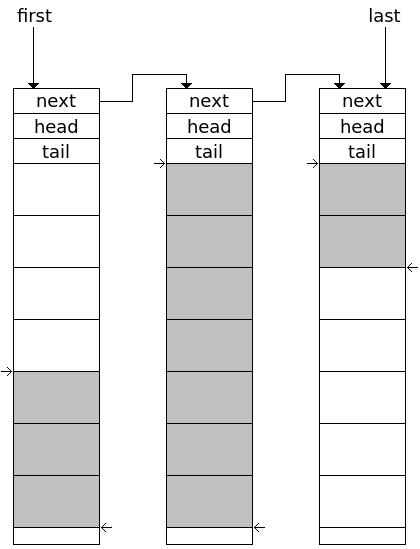

如何把埋雷和拆雷这些信息传递给决策层呢？为了实现“能力与策略分离”，并且保证kernel代码的稳定性，决策逻辑一定得运行在用户态。于是问题就成了如何从内核态向用户态传递消息了。方案呼之欲出——消息队列呀。
最初我有这么两种实现方案：
- 内核态实现一个队列，用户态使用read/ioctl等系统调用来读取时，kernel使用copy_to_user()等API将一部分消息复制到用户的buffer中。
- 内核态与用户态共享一段内存，该内存作为一个环形队列。内核态与用户态使用原子操作进行同步。
最终我采用了方案一，因为我发现用户态通常都不能容忍消息的丢失，因此队列必须能无限扩展，不能因为用户态偶尔read晚了而舍弃消息。而每条消息只有16字节（见后续博客），以一秒钟平均10000条消息为例，也就只需要额外复制160KB的数据量而已，因此方案一的劣势基本可以忽略。
类似于之前《页热度监控工具pgheat（三）——高内聚稀疏数组vmarray》中设计的vmarray一样，内核态的容器类数据结构应该优先考虑使用页作为内存分配单元。我的设计很简单，队列由多个链表节点构成，每一个链表节点都是一个页，除了页开头存放next node、read position和write position外，其余空间都用来存放元素。其结构如下图所示：

图中有三个节点，每一个就是一个4K内存页。节点的第一个8字节是一个指向下一个节点的指针；第二个8字节是该节点内读取的位置；第三个8字节是该节点内写入的位置。图中灰色的格子是有效数据。比如第一个节点中，第一个灰色格子的索引是4（从0计数），所以head就是4；而最后一个灰色格子的索引是6，所以tail就是7。由于4K页内很可能不能完全被填满，因此最后有少许空余空间。当需要向队列尾部增加元素时，将最后一个（last指针指向的)节点的tail加一即可。如果最后一个节点空间已被用完，则新分配一个节点。当需要从队列头部读取元素时，将第一个（first指针指向的）节点的head加一即可。如果第一个节点都被读完，则释放节点。
唯一一个需要注意的问题是——当从队列头部pop元素时，返回了当前head所指向的元素的地址，并将head加一。即是head已经等于tail，也不能释放节点，因为调用者还没有读取元素内容。因此，节点释放时机应该是下一次调用pop。
代码很简单，分为queue.h和queue.c。
queue.h
#ifndef QUEUE_H
#define QUEUE_H
#include "common.h"
// a node in queue
struct queue_node
{
struct queue_node* next; // next node
size_t head; // the head position in this node
size_t tail; // the tail position in this node
};
struct queue
{
// constants, keep unchange after init
size_t entry_size; // size of user entry in this queue
size_t entry_per_page; // how many entries in a node (one page is one node)
void* (*func_alloc_page)(void* privdata); // the function to allocate a page
void (*func_free_page)(void* page, void* privdata); // the function to free a page
void* privdata; // the privdata to the two functions above
struct queue_node* first; // the first node
struct queue_node* last; // the last node
// statistics
size_t length; // how many entries in the queue
size_t page_count; // how many pages used
};
// init
// entry_size: size of of user's element, sizeof(struct user_ele)
// page_size: size of a memory page, usually 4096
// func_alloc_page: the function to allocate a page
// func_free_page: the function to free a page
// privdata: user's privdata to the two functions above
// return 0 if succeed, or error code if failed.
int queue_init(struct queue* queue, size_t entry_size, size_t page_size,
void* (*func_alloc_page)(void* privdata),
void (*func_free_page)(void* page, void* privdata),
void* privdata);
// add an entry to the tail of the queue
// return the pointer of the new entry, or NULL if no memory
void* queue_add(struct queue* queue);
// take an entry from the head of the queue
// return the pointer of the poped entry, or NULL if the queue is empty
void* queue_take(struct queue* queue);
// glance at the head of the queue, but not remove it
// return the pointer of the first entry, or NULL if the queue is empty
void* queue_glance(struct queue* queue);
// release the resources
// destructor: the destructor to destroy every element, or NULL
void queue_deinit(struct queue* queue, void (*destructor)(void* value));
#endif
queue.c
#include "queue.h"
int queue_init(struct queue* queue, size_t entry_size, size_t page_size,
void* (*func_alloc_page)(void* privdata),
void (*func_free_page)(void* page, void* privdata),
void* privdata)
{
struct queue_node* node;
assert(queue);
if(unlikely(!(queue->entry_size = entry_size)))
ERROR0(-EINVAL, "param <entry_size = 0> is not allowed");
if(unlikely(page_size < sizeof(struct queue_node) + entry_size))
ERROR1(-EINVAL, "param <page_size = %lu> is too small", page_size);
queue->entry_per_page = (page_size - sizeof(struct queue_node)) / entry_size;
if(unlikely(!(queue->func_alloc_page = func_alloc_page)))
ERROR0(-EINVAL, "param <func_alloc_page = NULL> is not allowed");
if(unlikely(!(queue->func_free_page = func_free_page)))
ERROR0(-EINVAL, "param <func_free_page = NULL> is not allowed");
queue->privdata = privdata;
if(unlikely(!(node = func_alloc_page(privdata))))
ERROR0(-ENOMEM, "func_alloc_page(privdata) failed");
node->next = NULL;
node->head = 0;
node->tail = 0;
queue->first = queue->last = node;
queue->length = 0;
queue->page_count = 1;
return 0;
}
void* queue_add(struct queue* queue)
{
struct queue_node* last;
void* entry;
assert(queue);
last = queue->last;
assert(last);
if(likely(last->tail < queue->entry_per_page))
entry = (char*)last + sizeof(struct queue_node) + queue->entry_size * last->tail;
else
{
if(unlikely(!(last = queue->func_alloc_page(queue->privdata))))
ERROR0(NULL, "queue->func_alloc_page(queue->privdata) failed");
queue->page_count++;
last->next = NULL;
last->head = 0;
last->tail = 0;
queue->last->next = last;
queue->last = last;
entry = (char*)last + sizeof(struct queue_node);
}
last->tail++;
queue->length++;
return entry;
}
static void* generic_get_head(struct queue* queue, int remove)
{
struct queue_node* first;
void* entry;
if(unlikely(!queue->length))
return NULL;
first = queue->first;
assert(first);
assert(first->tail <= queue->entry_per_page);
if(unlikely(first->head == first->tail))
{
assert(first->tail == queue->entry_per_page);
queue->first = first->next;
assert(queue->first);
queue->func_free_page(first, queue->privdata);
assert(queue->page_count);
queue->page_count--;
first = queue->first;
}
assert(first->head < first->tail);
entry = (char*)first + sizeof(struct queue_node) + queue->entry_size * first->head;
if(remove)
{
first->head++;
queue->length--;
}
return entry;
}
void* queue_take(struct queue* queue)
{
assert(queue);
return generic_get_head(queue, 1);
}
void* queue_glance(struct queue* queue)
{
assert(queue);
return generic_get_head(queue, 0);
}
void queue_deinit(struct queue* queue, void (*destructor)(void* value))
{
struct queue_node* node;
assert(queue);
node = queue->first;
while(node)
{
struct queue_node* next = node->next;
assert(node->head <= node->tail);
if(destructor)
{
size_t i = node->head;
char* value = (char*)node + sizeof(struct queue_node) + queue->entry_size * i;
for(; i < node->tail; i++)
{
destructor(value);
value += queue->entry_size;
}
}
queue->length -= node->tail - node->head;
queue->func_free_page(node, queue->privdata);
assert(queue->page_count);
queue->page_count--;
node = next;
}
assert(!queue->length);
assert(!queue->page_count);
}